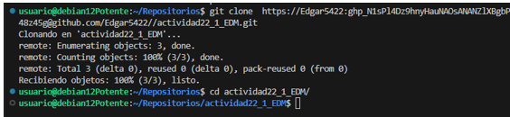
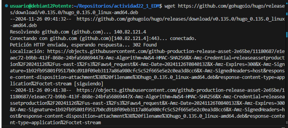
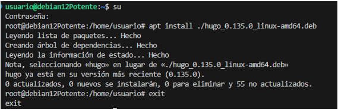
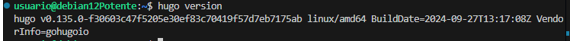
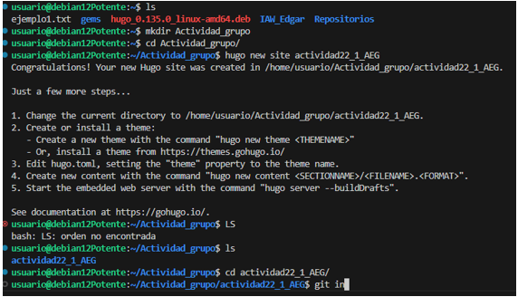
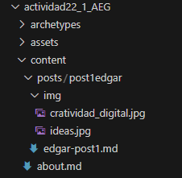
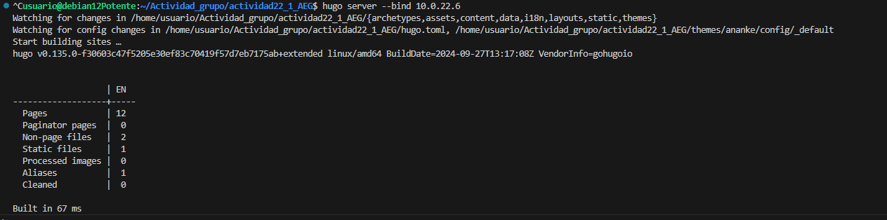
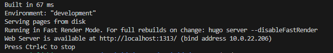
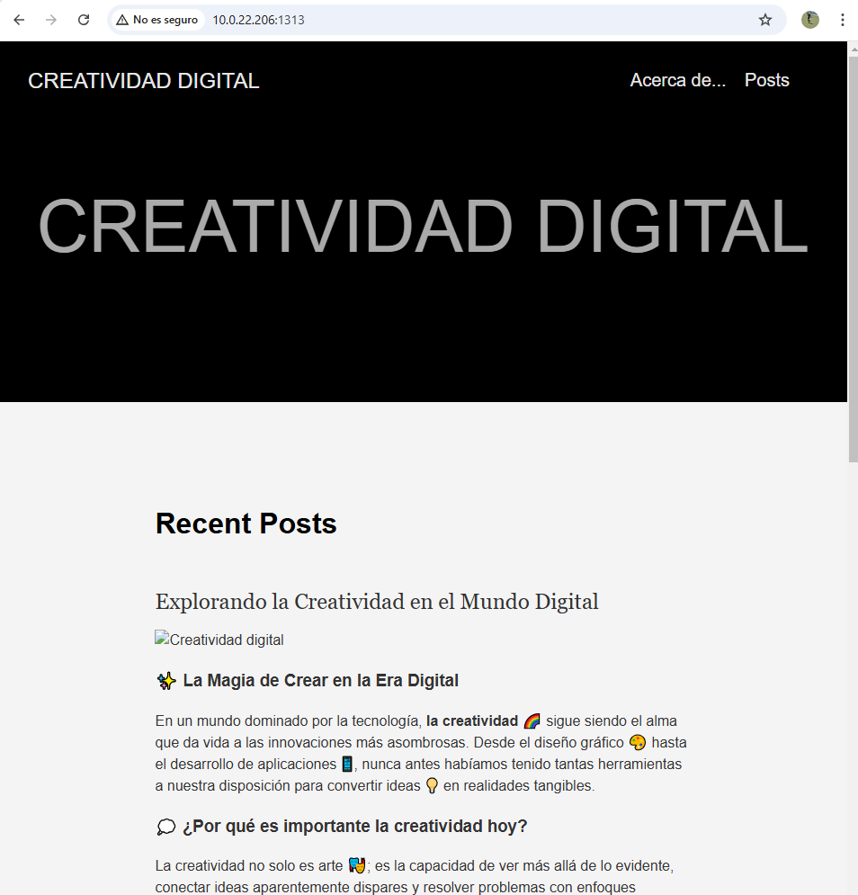
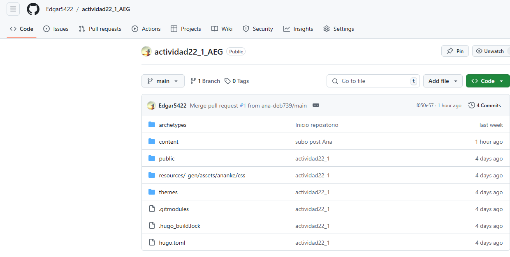

MARKDOWN DE EXPLICACIÓN DE EDGAR
🚀 Guía Paso a Paso: Implementación de Sitios Web Estáticos con HUGO y MKDocs 🌐
¡Bienvenidos a esta guía completa! Aquí aprenderás cómo implementar tres tipos de sitios web estáticos utilizando HUGO y MKDocs. Cada sitio tendrá un propósito único y será desplegado en plataformas populares como GitHub Pages, Netlify y Cloudflare. ¡Manos a la obra! 💪
Índice
- Introducción
- Tarea 1: Blog Sencillo con HUGO y Ananke
- Paso 1: Configura tu entorno
- Paso 2: Crea un nuevo proyecto
- Paso 3: Añade el tema Ananke
- Paso 4: Crea tu contenido
- Paso 5: Prueba el sitio
- Paso 6: Despliega el sitio
- Tarea 2: Sitio Variado con HUGO y PaperMod
- Paso 1: Configura tu entorno
- Paso 2: Crea un nuevo proyecto
- Paso 3: Añade el tema PaperMod
- Paso 4: Personaliza el contenido
- Paso 5: Despliega el sitio
- Tarea 3: Documentación con MKDocs y Material
- Paso 1: Configura tu entorno
- Paso 2: Crea el sitio
- Paso 3: Añade el tema Material
- Paso 4: Documenta las actividades
- Paso 5: Despliega el sitio
- Conclusión
Introducción
En la era de la transformación digital, los sitios web estáticos han resurgido como una solución eficiente y poderosa para crear contenido accesible, seguro y fácil de mantener. Herramientas modernas como HUGO y MKDocs nos permiten desarrollar sitios web dinámicos en apariencia, pero estáticos en su funcionamiento, ideales para blogs, portfolios o documentación técnica.
Este proyecto consta de tres tareas interconectadas que exploran la implementación y despliegue de sitios web utilizando tecnologías avanzadas y temas visualmente atractivos como Ananke, PaperMod y Material. Cada sitio web está diseñado para cumplir con propósitos específicos, desde blogs creativos hasta documentaciones profesionales, y se despliega en plataformas robustas como GitHub Pages, Netlify y Cloudflare.
En esta guía, aprenderás paso a paso cómo configurar tu entorno, desarrollar los sitios y desplegarlos en línea. Prepárate para explorar una forma innovadora de construir sitios web y documentar tu aprendizaje, mientras das vida a proyectos impactantes que reflejan la esencia de la tecnología y la creatividad. 🚀
📝 Tarea 1: Blog Sencillo con HUGO y Ananke
Un blog estático con el tema Ananke, desplegado en GitHub Pages y Netlify.
🔧 Paso 1: Configura tu entorno
- Instala Hugo en tu sistema.
- Verifica la instalación con:
bash hugo version



📂 Paso 2: Crea un nuevo proyecto
Crea un nuevo sitio llamado blog-hugo-ananke:
bash
hugo new site blog-hugo-ananke

Navega al directorio:
bash
cd actividad22_1_AEG
🎨 Paso 3: Añade el tema Ananke
Descarga el tema:
bash
git init
bash
git submodule add https://github.com/theNewDynamic/gohugo-theme-ananke.git themes/ananke
Configura el tema en config.toml:
toml
theme = "ananke"
✍️ Paso 4: Crea tu contenido
Genera tu primer post:
bash
hugo new posts/primer-post.md

Edita el contenido en content/posts/primer-post.md.
🔍 Paso 5: Prueba el sitio
Inicia un servidor local:
bash
hugo server

Accede a http://localhost:1313 para visualizar el sitio.


☁️ Paso 6: Despliega el sitio
- GitHub Pages: Crea un repositorio en GitHub.
- Añade los archivos y haz un push:
bash git add . git commit -m "Initial commit" git branch -M main git remote add origin https://github.com/tu_usuario/blog-hugo-ananke.git git push -u origin main
Configura GitHub Pages desde la rama main.
Netlify:
- Crea una cuenta en Netlify.
- Conecta el repositorio y selecciona el directorio public/ como carpeta de publicación.
🌟 Tarea 2: Sitio Variado con HUGO y PaperMod
Un sitio estático con temática variada, usando el tema PaperMod, desplegado en GitHub Pages y Cloudflare.
🔧 Paso 1: Configura tu entorno
(Similar al Paso 1 de la Tarea 1).
📂 Paso 2: Crea un nuevo proyecto
Crea un sitio llamado sitio-variante: bash Copiar código hugo new site sitio-variante
🎨 Paso 3: Añade el tema PaperMod
Descarga el tema: bash Copiar código git submodule add https://github.com/adityatelange/hugo-PaperMod themes/PaperMod Configura el tema en config.toml: toml Copiar código theme = "PaperMod"
🛠️ Paso 4: Personaliza el contenido
Crea secciones variadas como "Portfolio", "Blog" o "Recetas". Usa hugo new para añadir contenido.
☁️ Paso 5: Despliega el sitio
GitHub Pages: Sigue los mismos pasos que en la Tarea 1. Cloudflare Pages: Crea una cuenta en Cloudflare Pages. Conecta tu repositorio y selecciona el directorio public/.
📘 Tarea 3: Documentación con MKDocs y Material
Un sitio estático que documenta las actividades, basado en MKDocs y el tema Material, desplegado en GitHub Pages y Cloudflare.
🔧 Paso 1: Configura tu entorno
Instala MKDocs en tu sistema:
pip install mkdocs
Verifica la instalación:
mkdocs --version
📂 Paso 2: Crea el sitio
Genera un proyecto nuevo:
mkdocs new actividad2_2
cd actividad2_2
🎨 Paso 3: Añade el tema Material
Instala el tema:
pip install mkdocs-material
Configura el tema en mkdocs.yml: yaml
theme:
name: material
✍️ Paso 4: Documenta las actividades
Edita los archivos en el directorio docs/ para documentar las tareas.
☁️ Paso 5: Despliega el sitio
GitHub Pages: Configura GitHub Pages para el repositorio. Genera el sitio:
mkdocs gh-deploy
Cloudflare Pages: Publica los archivos estáticos generados en site/.
✅ Conclusión
Con estas instrucciones, ahora puedes implementar y desplegar tres sitios web estáticos profesionales y variados. Desde blogs hasta documentaciones técnicas, estas herramientas te permitirán crear contenido visualmente atractivo y funcional. ¡Explora tu creatividad y comparte tus proyectos con el mundo! 🌍✨